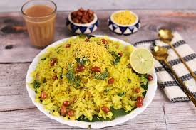

Kande Pohe

Kande Pohe is a popular Indian breakfast dish made with flattened rice (poha), onions (kande), and a mix of spices, often garnished with fresh coriander, lemon juice, and peanuts.
It is light, flavorful, and quick to prepare.
- Flattened rice(poha)
- Onions
- Peanuts
- Mustard seeds
- Rinse and drain the poha
- Saute mustard seeds, onions, and peanuts in oil
- Add poha, salt, and turmeric, and mix well.
- Garnish with coriander and lemon juice, then serve.